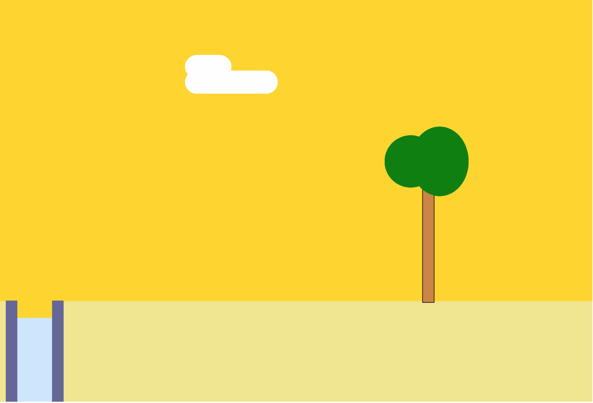

In the last post, we set up your environment, I introduced you to P5.js and we looked at how to use functions from this library to create the background of our game. Today we’ll be creating a game character, and we’ll learn how to make it walk, jump and fall. Through this process, you’ll learn about variables, the 'flow' of the program, conditionals and debugging using console.log. I'd strongly encourage you to read through, but if you'd like to have a look at the final code from this post right away you can find it on my github.
Setting Up
To start off with we’ll use some of the code from the last post to create some background scenery. Here’s the image I have in my browser. I’ve also included the sketch file code for this initial scene. If you run the code and don’t see anything in your browser, head back to my last post to see why you might be seeing a blank screen, or check your console for any errors.

var floorPos_y;
var gameChar_x;
var gameChar_y;
function setup()
{
createCanvas(1024, 695);
floorPos_y = height * 3/4;
gameChar_x = 300;
gameChar_y = floorPos_y;
}
function draw()
{
background(255,215,0); // fill the sky with gold
// draw some yellowish ground
noStroke();
fill(240,230,140);
rect(0, floorPos_y, width, height/4);
// Draw clouds.
noStroke();
fill(255);
noStroke();
fill(255, 80);
rect(320, 122 - 80 / 3, 80, 40, 100);
rect(320, 122, 160, 40, 100);
// Draw trees.
stroke(0);
//trunk
fill(205,133,63);
rect(730,floorPos_y * 6/10 -50,20, 260);
//leaves
fill(0,128,0);
noStroke();
ellipse(710,(floorPos_y * 6.7/10) -70,90,90);
ellipse(760,(floorPos_y * 6.7/10) -70,100,120);
// Draw canyons.
noStroke();
fill(color('#666699'));
rect(10, 520, 100, 186);
fill(color('#cce6ff'));
rect(10 + 20, 550, 100 - 40, 190);
fill(255,215,0);
rect(10 + 20, 482, 100 - 40, 68);
}
Variables
Something different you might notice right away are the first 3 lines of code in this file;
var floorPos_y;
var gameChar_x;
var gameChar_y;
In the previous post, I didn’t really touch on variables so I’ll do so briefly now (if you have experience with variables skip to the next paragraph.) The last time we used p5js functions like ellipse() to draw shapes to the screen. Each function took a set of ‘arguments’, for example, the ellipse() function takes a value for the shapes x position, y position and its size. We used fixed values for these arguments because the shapes were staying in one place, and not changing size. However, when we want to add animations and movement to an object (like our game character), using fixed values won’t be sufficient. This is where variables come in to save the day!
Variables are placeholders that can be substituted by new values or adjusted once the program starts to run. In our code floorPos_y, gameChar_x and gameChar_y are variables. You can create or ‘declare’ a variable by using the ‘var’ keyword at the top of the program. We then give it an initial placeholder value. In this case, in the setup function we have set gameChar_x to 300, floorPos_y to ¾ x height and gameChar_y to the same value as floorPos_y. Throughout our program, we will assign different values to these variables, and they will take on that new value in that moment. We’ll become more comfortable with this concept as we develop our game character, so let’s start that right away!
The floorPos_y variable is the y value for the top of the rectangle representing our floor. The gameChar_x and gameChar_y variables will represent where our game character is located. Note that I’ve given each of them an initial value in the setup function. Let's start by drawing an ellipse on our ground. Add the ellipse() function at the bottom of the draw() function and for its arguments, make the first argument gameChar_x and the second gameChar_y. Then, use 30 and 30, for the third and fourth arguments to make the circle 5x5 pixels (if you need a refresher on drawing shapes in p5js visit this link.) Finally, put the fill() function above the ellipse() function and make it any colour you want. I’ll go with a pinkish color for now. In the live preview window, you should now see the ellipse sitting on the ground. You should also note that the program reads your code from the top to the bottom, this is the ‘flow’ of the program. The code at the top of a function is drawn first, so is placed in the background and the code at the bottom is drawn last and so is placed in the foreground. This is why it's important that the code for your ellipse is at the bottom of the draw() function. If you aren’t seeing it on the screen it may be because you have it in the wrong order in your draw() function.
keyPressed and keyReleased Functions
I’m now going to introduce you to two new functions, keyPressed and keyReleased. Similarly to the setup and draw functions, these are functions that p5js gives us. If you have time, head over to the links to read more about what these functions do. In summary, the keyPressed function tells the program what code to run when a key on your keyboard is pressed. The keyReleased function tells it what to do when a key has been released after being pressed. Add these two functions at the end of your program, after the draw function as shown below.
function keyPressed()
{
}
function keyReleased()
{
}
Conditional Statements
Next we’re going to add what are called ‘conditional statements’ to the keyPressed and keyReleased functions. Conditional statements are like questions. They allow a program to decide to take one action if the answer to a question is true or to do another action if the answer to the question is false. We’ll start to write one now in the keyPressed function.
We want to tell the program what to do when the left or right arrow keys are pressed. To do this we will write two ‘if’ statements. When writing an 'if' statement start of by writing the word if, followed by closed brackets and some curly braces. Like this
if(){}
The closed brackets take what we call a 'condition' for its argument. The condition determines whether or not the code in the curly braces is run. For our first conditional statement we will be using the 'keyCode' of the left arrow as our condition. You can read more about keycodes here. Take a look at the code below.
function keyPressed()
{
if(keyCode == LEFT_ARROW)
{
}
else if(keyCode == RIGHT_ARROW)
{
}
}
function keyReleased()
{
if(keyCode == LEFT_ARROW)
{
}
else if(keyCode == RIGHT_ARROW)
{
}
}
If the left arrow is pressed the LEFT_ARROW keyCode is recognised and the code in the curly braces to run. Therefore the first conditional statement tells the program what to do when the left arrow key is pressed. The second one tells the program what to do when the right arrow is pressed. The same thing goes for the statements in the keyReleased function.
So what happens when one of our keys is pressed or released? We’ll be placing some variables in these conditional statements that will determine what will be drawn to the screen. Let's start off by creating two new variables.
At the very top of your program type in var isLeft and var isRight. In the setup() function type in isLeft = false and isRight = false. Setting these two variables to true or false makes them ‘boolean values.’ Boolean values are used quite often in programming and let us know if something is true or false. In our case we’ll be using them to tell if the arrow being pressed and released is the left or right one. We initially set the values to false because we aren’t pressing either of those keys right now.
Inside the first ‘if’ statement, in the keyPressed function, add the isLeft variable and set it to true. Add the isRight variable to the second if statement. Do the same for the keyReleased functions but set the values to false. Your code should look similar to this (I've left out the code in the draw() function, I've also added a new console.log() function, which we'll discuss next.)
var floorPos_y;
var gameChar_x;
var gameChar_y;
var isLeft;
var isRight;
function setup()
{
createCanvas(1024, 695);
floorPos_y = height * 3/4;
gameChar_x = 300;
gameChar_y = floorPos_y -13;
isLeft = false;
isRight = false;
}
function draw()
{
...
}
function keyPressed()
{
if(keyCode == LEFT_ARROW)
{
console.log('left arrow');
isLeft = true;
}
else if(keyCode == RIGHT_ARROW)
{
console.log('right arrow');
isRight = true;
}
}
function keyReleased()
{
if(keyCode == LEFT_ARROW)
{
console.log('left arrow');
isLeft = false;
}
else if(keyCode == RIGHT_ARROW)
{
console.log('right arrow');
isRight = false;
}
}
Debugging with Console.log()
We haven’t actually made any changes to the draw() function so we won’t see any changes on screen just yet. However, Javascript has a built in function that can help us ‘debug’ or check our code is working. The function is console.log(). You can see that I’ve added some console.log() statements in my code above. If the ‘if’ statement works correctly, when its condition is met, the statement in the console.log() function should appear in your developer console. For example, with the code I have when I press the left arrow key I should see ‘left arrow’ in my developer console. This process of checking to see if your program is running smoothly in the console is the foundation of ‘debugging’ in Javascript. Console.log() is a function you can use to do this, even for more complex projects. This is what my console looks like when my conditions are working correctly.
If all your keys are showing the correct console messages Hooray!!! Lets start to get our character moving!
Changing Variable Values
In the draw() function we will add two new ‘if’ statements. The first one will be if(isLeft == true). This conditional will tell our program what to draw to the screen if the isLeft variable is true. If you remember, we just made it so that this variable is set to true, only if the left arrow key is being pressed. It is set back to false when the left arrow key is released again. In this conditional statement we will place the drawing code for the ellipse (our character), but we will now be focusing on changing the value of the characters x position on the screen.
At the beginning of the post we set the value of gameChar_x to 300. When the left key is pressed, we want the character to move to the left. On the x-axis this means that the value of x should decrease. To do this, after the code to draw your ellipse in the isLeft ‘if’ statement place the statement gameChar_x -= 5. This statement will subtract 5 from the value of gameChar_x for as long as the condition in the isLeft statement is true. This is the same concept we will use for the isRight conditional. We’ll also add the original ellipse code in an ‘else’ statement right at the bottom of the draw() function. This makes sure the ellipse is still showing when none of these keys is pressed. Take a look at my code to see how this is done.
if(isLeft)
{
gameChar_x -= 5;
fill(240,128,128);
ellipse(gameChar_x, gameChar_y, 30, 30);
}
else if(isRight)
{
gameChar_x += 5;
fill(240,128,128);
ellipse(gameChar_x, gameChar_y, 30, 30);
}
else
{
fill(240,128,128);
ellipse(gameChar_x, gameChar_y, 30, 30);
}
Other movements in our program like jumping, use these same concepts. Try and figure out how to do this on your own. [HINT] Create an isJumping variable (boolean) and subtract from the gameChar_y variable. Consider using the AND operator in your isJumping conditional statement in the draw() function to make sure the character only jumps when it's on the floor. Read about operators here. Also try and add a new ‘if’ statement that detects when your character is above the ground and when this condition is true subtracts from gameChar_y to make it fall back to the ground. I’ll leave a link to my Github below for you to have a look a my full code, but try as much as you can to work it out on your own :)
Alright! We’ve done quite a bit already. If you’d like to improve the way your character looks when it moves you can edit the code in the draw() function under a specific conditional statement. For example, if you’d like the ellipse to appear thinner as it moves left, edit the size argument of the ellipse() function under the isLeft conditional. In my case the ellipse code changed to this ellipse(gameChar_x, gameChar_y, 15, 30); and when I press the left arrow and the ellipse moves left, I see the following on my screen.
If you are able to make these changes, you can also start to edit your character so that it is not just an ellipse. Add other shapes to it, to make it as complex as you’d like, or add an image character. I’d advise you to start with the ellipse code in the ‘else’ conditional. This is the code that is displayed when your character is at rest. Remember to use the gameChar_x and gameChar_y variables as your arguments. This makes sure that all the shapes you’ve used adapt when we edit these variables. Start simple but as you grow in confidence you can make your character more complex. Here’s the character I started out with. I only made my character more complex right at the end of creating my game. This is sometimes best as it can help you avoid confusion.

Ok! Well done if you managed to reach this point! You can already do so much with the knowledge you now have. You also learnt the basics about some fundamental concepts in Javascript namely; variables and how to change them, booleans, conditional statements and debugging with console.log().
I think this is a good place to end this post for now. If you’d like to download the code that’s behind what we have so far, download it on my github here.
I’d encourage you to play around with the code. Try and see if you can add more conditional statements, say for example to change what the character looks like when it's jumping and facing left. Try to add a statement that makes the character fall when it’s over the water. You should be able to do lots of things with the conditional statements. If you struggle with anything let me know and I’ll address it in my upcoming post. Next time, we’ll create our own functions and focus on making the character interact with its environment. This is useful for adding a points system to a game or adding or losing life when you create villians. As usual, we’ll also learn some core concepts in Javascript while having fun with this game.
If you have any specific questions feel free to reach out to me! Send me an email here, or find me on twitter. If you enjoyed this post share it with someone else!
Thanks for reading,
Marlene